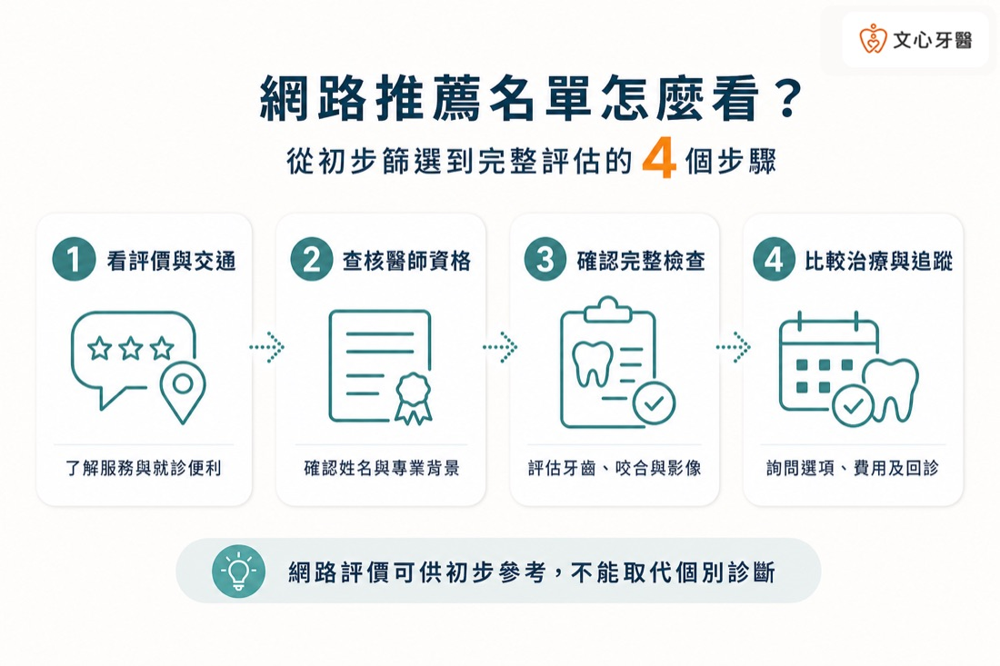
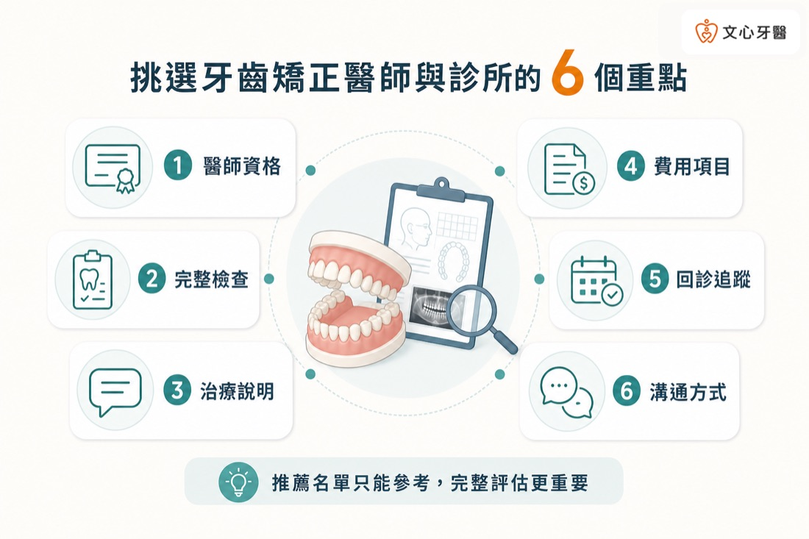
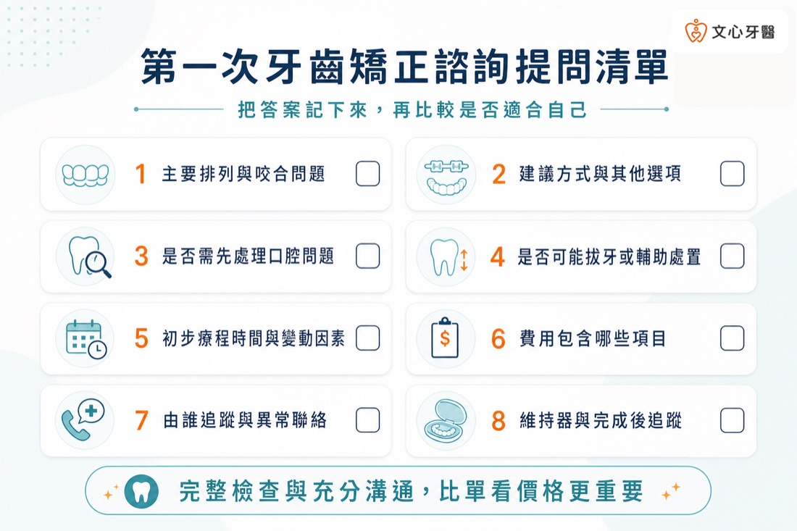

前言
搜尋「台南牙齒矯正推薦」時，常會看到診所評價、矯正前後照片、價格資訊，以及隱適美、傳統牙套等不同選擇。這些資料可以作為初步參考，但牙齒矯正涉及牙齒移動、咬合關係、牙根與齒槽骨狀況，不能只用網路排名、單一案例或價格決定。
真正值得比較的，不是哪一間診所被最多人稱為「最好」，而是醫師是否具備可查核的專業背景、是否完成必要檢查、能否說明不同治療方案，以及療程中由誰持續追蹤。
本文整理挑選台南牙齒矯正醫師與診所前可確認的 6 個重點，協助您把「推薦名單」轉化為實際可詢問、可比較的項目。每個人的牙齒、咬合與口腔健康條件不同，實際治療仍須由醫師完成檢查後評估。
原因包括：
台灣的齒顎矯正科有衛生福利部專科醫師甄審制度，民眾可透過衛福部口腔健康司公布的專科醫師相關資料進一步查核。需要留意的是，「隱適美認證醫師」與「衛福部齒顎矯正科專科醫師」代表的資格性質不同，瀏覽資料時應分開理解，不宜混為同一項證明。
諮詢前可確認：
依個別情況，初步評估可能包含：
若想進一步了解文心牙醫目前公開的評估流程，可閱讀
〈第一次諮詢隱適美會做什麼？一定要 3D 口掃、拍 X 光嗎？〉。
諮詢時可詢問：
想比較不同矯正方式，可延伸閱讀
〈台南隱適美 vs 傳統牙套差在哪？療程時間與適合族群比較〉
是否需要拔牙則需依個別檢查判斷，可參考
〈隱適美需要拔牙嗎？哪些情況需要、哪些不用？〉。
建議確認：
〈台南隱適美價格怎麼算？費用差異、評估流程與常見問題〉。
可以詢問：
關於每日配戴、牙套更換與影響療程的因素，可閱讀
〈台南隱適美要戴多久？療程時間、每日配戴時數與影響因素整理〉。
例如：
文心牙醫官網公開矯正醫師專業背景，並提供隱適美與齒顎矯正相關評估。若您正在比較台南牙齒矯正、隱適美或傳統牙套，可先整理希望改善的問題及本文提問清單，再由醫師透過口腔檢查與必要影像資料，說明適合的治療方向。
搜尋「台南牙齒矯正推薦」時，常會看到診所評價、矯正前後照片、價格資訊，以及隱適美、傳統牙套等不同選擇。這些資料可以作為初步參考，但牙齒矯正涉及牙齒移動、咬合關係、牙根與齒槽骨狀況，不能只用網路排名、單一案例或價格決定。
真正值得比較的，不是哪一間診所被最多人稱為「最好」，而是醫師是否具備可查核的專業背景、是否完成必要檢查、能否說明不同治療方案，以及療程中由誰持續追蹤。
本文整理挑選台南牙齒矯正醫師與診所前可確認的 6 個重點，協助您把「推薦名單」轉化為實際可詢問、可比較的項目。每個人的牙齒、咬合與口腔健康條件不同，實際治療仍須由醫師完成檢查後評估。

※ 網路評價僅供初步參考，不能取代醫師的個別診斷。
先說結論：找台南牙齒矯正推薦時，真正值得比較的不是單一星等、案例照片或最低價格，而是醫師背景是否可查核、檢查是否完整、方案與限制能否說明、費用項目是否透明，以及回診與溝通安排是否清楚。以下 6 項可作為初診前的查核清單。
本文重點
- 查核醫師的正式資格、訓練背景及主要服務項目。
- 確認診所是否先完成口腔、咬合及必要影像檢查。
- 比較醫師如何說明治療目標、替代方案與限制。
- 費用應連同包含項目、追加處置及維持階段一起確認。
- 了解回診安排、異常狀況及療程中由誰追蹤。
- 選擇能充分溝通，且治療規劃符合個人需求的醫療團隊。

※ 推薦名單只能作為初步篩選，仍應依完整檢查與治療規劃評估。
台南牙齒矯正推薦，不能只看網路評價嗎？
網路評價多半反映患者對服務、環境、等候時間或個人治療經驗的感受，能協助您初步了解診所，但無法取代專業資格與個別診斷。原因包括：
- 評論者的牙齒與咬合問題可能與您不同。
- 相似的牙齒外觀，背後可能有不同的牙根、牙周或骨骼條件。
- 矯正前後照片通常只呈現特定角度，未必能看出完整咬合與治療限制。
- 療程時間、是否拔牙及適合的矯正方式都可能因人而異。
- 價格不同，可能與檢查、治療複雜度、追蹤內容及維持安排有關。
重點一：醫師資格與矯正背景是否能查核？
挑選齒顎矯正醫師時，第一步是查看官網或公開資料是否清楚列出醫師姓名、學經歷、專科資格及服務項目。台灣的齒顎矯正科有衛生福利部專科醫師甄審制度，民眾可透過衛福部口腔健康司公布的專科醫師相關資料進一步查核。需要留意的是，「隱適美認證醫師」與「衛福部齒顎矯正科專科醫師」代表的資格性質不同，瀏覽資料時應分開理解，不宜混為同一項證明。
諮詢前可確認：
- 實際進行評估及規劃的醫師是誰？
- 官網是否公開醫師完整姓名與專業背景？
- 醫師是否具有可查核的齒顎矯正科專科資格？
- 醫師平時主要處理哪些矯正服務或年齡層？
- 療程是否由同一位醫師或同一團隊持續追蹤？
重點二：是否先完成完整檢查，而不是只看牙齒外觀？
矯正規劃不能只看牙齒表面整不整齊。醫師還需要了解牙根、齒槽骨、牙周健康、牙弓空間、上下顎位置與咬合關係。依個別情況，初步評估可能包含：
- 病史及治療需求詢問
- 口內臨床檢查
- 牙齒與臉部照片
- 數位口腔掃描或齒模
- 全口 X 光
- 側顱 X 光及相關分析
- 牙周與蛀牙狀況評估
若想進一步了解文心牙醫目前公開的評估流程，可閱讀
〈第一次諮詢隱適美會做什麼？一定要 3D 口掃、拍 X 光嗎？〉。
重點三：醫師能否說明治療目標、選項與限制？
好的矯正諮詢不只是告訴患者「可以做哪種牙套」，還應協助理解目前有哪些問題、治療希望改善什麼，以及不同方法的取捨。諮詢時可詢問：
- 目前主要是排列、咬合，還是顎骨關係的問題？
- 治療的必要目標與外觀期待是否一致？
- 有哪些可行的矯正方式？為什麼建議其中一種？
- 隱適美、傳統牙套或其他方式各有什麼限制？
- 是否可能需要拔牙、鄰接面修磨、骨釘、橡皮筋或其他輔助處置？
- 哪些結果可以合理討論，哪些部分具有不確定性？
想比較不同矯正方式，可延伸閱讀
〈台南隱適美 vs 傳統牙套差在哪？療程時間與適合族群比較〉
是否需要拔牙則需依個別檢查判斷，可參考
〈隱適美需要拔牙嗎？哪些情況需要、哪些不用？〉。
重點四：費用是否說明包含項目，而不只提供一個總價？
牙齒矯正費用可能受到問題複雜度、療程設計、矯正裝置、預估時間及其他治療需求影響。比較費用時，除了總額，也應了解不同報價是否包含相同內容。建議確認：
- 初診、照片、口掃及 X 光是否另行計費？
- 療程費用包含哪些矯正裝置及回診項目？
- 附件、橡皮筋、骨釘或拔牙等處置如何計費？
- 隱形矯正若需要重新掃描或修正牙套，是否有條件或額外費用？
- 矯正完成後的維持器是否包含？包含幾副？
- 若療程計畫改變，診所如何說明新增費用？
- 付款階段、退費或中止療程的規定為何？
〈台南隱適美價格怎麼算？費用差異、評估流程與常見問題〉。
重點五：回診、異常狀況與療程追蹤方式是否清楚？
矯正療程通常需要一段時間，開始前應了解後續如何追蹤，而不只關注第一次諮詢。可以詢問：
- 一般回診頻率如何安排？
- 每次回診主要會確認哪些項目？
- 實際追蹤與調整是否由原規劃醫師負責？
- 牙套不密合、附件脫落、矯正器鬆脫或持續不適時如何聯絡？
- 若長期出差、出國或無法按期回診，應如何安排？
- 療程完成後如何進入維持與定期追蹤？
關於每日配戴、牙套更換與影響療程的因素，可閱讀
〈台南隱適美要戴多久？療程時間、每日配戴時數與影響因素整理〉。
重點六：醫師是否願意溝通，治療規劃是否符合個人需求？
醫師的專業資格與檢查資料很重要，患者能否理解並配合療程也同樣關鍵。第一次諮詢時，可以觀察醫師是否願意聽取您的主要困擾、生活習慣與期待，並用能理解的方式說明。例如：
- 工作是否經常需要公開說話或拍攝？
- 是否能穩定配戴可拆式牙套？
- 是否方便按期回診？
- 過去是否接受過矯正或其他牙科治療？
- 最在意的是排列、清潔、咬合功能還是外觀？
- 對拔牙、療程時間或預算有哪些顧慮？
第一次矯正諮詢，可以帶著這份問題清單
為避免現場忘記提問，可事先記下：- 我的主要排列與咬合問題是什麼？
- 建議的治療目標與方式是什麼？還有其他選項嗎？
- 是否需要先治療蛀牙、牙周問題或其他口腔狀況？
- 是否可能需要拔牙或其他輔助處置？判斷依據是什麼？
- 初步療程時間如何估算？哪些因素可能改變進度？
- 費用包含哪些檢查、回診、修正與維持項目？
- 療程中由哪位醫師追蹤？異常時如何聯絡？
- 完成矯正後，需要如何配戴維持器及追蹤？

※ 建議記錄各診所的回答，再比較醫師說明、追蹤方式與自身配合度。
建議把不同診所的答案記錄下來，再比較醫師的診斷邏輯、說明完整度及自己能否配合，而不是只比較單一價格或網路星等。 常見問題（FAQ）
Q1：台南牙齒矯正推薦，可以直接看 Google 評價最高的診所嗎？
Google 評價可用來了解服務與患者經驗，但不能取代醫師資格、完整檢查與個別診斷。建議同時查核醫師背景、評估流程、治療說明及後續追蹤方式。Q2：一定要找齒顎矯正科專科醫師嗎？
台灣有衛福部齒顎矯正科專科醫師甄審制度，專科資格是可查核的專業背景之一。實際選擇時，也應綜合醫師訓練、診斷說明、治療需求、追蹤方式與溝通情況判斷。若不確定資格，可查詢主管機關公開資料或直接向診所確認。Q3：隱適美認證醫師等於齒顎矯正專科醫師嗎？
不等同。兩者由不同制度或機構認定，代表的訓練及資格性質不同。查看醫師資料時，應分別確認，不宜只看到「認證」兩字就視為相同資格。Q4：看過矯正案例，就能判斷醫師是否適合我嗎？
案例能協助了解醫師的說明方式，但不能直接預測個人結果。即使外觀看起來相似，牙根、牙周、骨骼與咬合條件仍可能不同，需經個別檢查後評估。Q5：第一次諮詢就要決定開始矯正嗎？
不一定。第一次諮詢的重點是了解口腔狀況、治療選項、限制、時間及費用。若仍有疑問，可以先整理資料或取得第二意見，再決定是否開始。Q6：價格較高就代表矯正效果一定比較好嗎？
不能只用價格推論結果。費用可能受到治療複雜度、矯正方式、檢查、追蹤與維持內容影響；實際治療結果也與個人口腔條件、醫師規劃及患者配合有關。台南牙齒矯正醫師怎麼選？從可查核的資訊開始
搜尋「台南牙齒矯正推薦」，重點不是找到一個適用所有人的排名，而是確認醫師背景、檢查是否完整、治療方案是否說明清楚、費用包含什麼，以及療程中如何持續追蹤。文心牙醫官網公開矯正醫師專業背景，並提供隱適美與齒顎矯正相關評估。若您正在比較台南牙齒矯正、隱適美或傳統牙套，可先整理希望改善的問題及本文提問清單，再由醫師透過口腔檢查與必要影像資料，說明適合的治療方向。
預約台南牙齒矯正評估
若您正在比較固定式牙套、隱形牙套或其他牙齒矯正方向，可先查看台南牙齒矯正服務說明，再由醫師透過口腔檢查與影像資料說明適合的治療方向。
本文為一般口腔衛教資訊，不能取代醫師診斷。實際適應症、檢查項目、治療方式、療程時間及費用，須由醫師依個別口腔狀況評估。